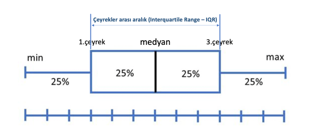

Veri ön işleme; istatistiksel modeller kurulmadan önce veri seti üzerinde yapılan bir takım düzeltme, eksik veriyi tamamlama, tekrarlanan verileri kaldırma, dönüştürme, bütünleştirme, temizleme, normalleştirme, boyut indirgeme vb. işlemlerdir. Bu aşamada ister istemez veri üzerinde bilgi keşfi yapılmış olur. Veri önişleme istatistiksel bir modelleme sürecinin büyük kısmını oluşturmaktadır. Kesin bir rakam olmamakla birlikte modelleme sürecinin yarısından fazlasının bu aşamada harcandığını ifade edebiliriz. Veri ön işleme temel anlamda 4 aşamadan oluşmaktadır. Bunlar sırasıyla şu şekildedir:
Veri Temizleme : Eksik verilerin tamamlanması, aykırı değerlerin teşhis edilmesi ve verilerdeki tutarsızlıkların giderilmesi gibi işlemler yapılmaktadır.
Veri Birleştirme: Farklı farklı veri tabanlarında bulunan veri setlerinin tek bir yerde toplanması aşamasının düzenli bir şekilde yürütülmesi sağlanır.
Veri Dönüştürme : Bu aşamada veriler, modelleme için uygun formlara dönüştürülürler. Veri dönüştürme; düzeltme, birleştirme, genelleştirme ve normalleştirme gibi değişik işlemlerden biri veya bir kaçını içerebilir. Veri normalleştirme , min-max dönüşümü, z standartlaştırması gibi yöntemler en sık kullanılan veri dönüştürme işlemlerinden bazılarıdır.
Veri İndirgeme : Daha küçük hacimli olarak veri kümesinin indirgenmiş bir örneğinin elde edilmesi amacıyla uygulanır. Bu sayede elde edilen indirgenmiş veri kümesine modelleme teknikleri uygulanarak daha etkin sonuçlar elde edilebilir. Veri Birleştirme (Data Aggregation), Boyut indirgeme (Dimension Reduction), Veri Sıkıştırma (Data Compression), Kesikli hale getirme (Discretization), Özellik Seçimi (Feature Selection) sık kullanılan veri indirgeme işlemlerindendir.
Bu dokümanda eksik veriler (missing values), aykırı değerler (outliers) ve veri normalleştirme işlemleri R uygulamları ile anlatılacaktır.
Eksik Veriler
Eksik veriler, bir veri setinde belirli gözlemlerde veya değişkenlerde eksik veya boş değerler içeren durumlardır. Eksik veriler, ölçüm hatası, veri toplama sürecindeki problemler veya rasgele olaylar nedeniyle ortaya çıkabilir. Sistematik bir kayıp gözlem durumu yoksa ortada ciddi bir sorun yoktur. Ama rastgele olmayan bir hata varsa tüm kitleye dair yanlılık olacağı için bu durum göz ardı edilemez.
Eksik Verilerin Türleri:
Rasgele Eksiklik (MCAR - Missing Completely At Random): Eksiklik, gözlemler arasında tamamen rastgele ve bağımsız bir şekilde meydana gelir. Örneğin, bir anket çalışması yapıyorsunuz ve bazı katılımcılar, bilgisayar hatası nedeniyle rastgele seçilmiş sorulara cevap verememişlerdir. Bu durumda, eksiklik rastgele olarak oluştu ve diğer değişkenlerle ilişkili değildir.
Rastgele Eksiklik (MAR - Missing At Random): Eksiklik, diğer değişkenlerin değerlerine bağlı olarak meydana gelir, ancak eksik veri değeri eksik olduğu değişkenle ilgili değildir. Örneğin, bir sağlık çalışması yapılıyor ve bazı katılımcılar, yaşlarına bağlı olarak belirli testlere katılamıyorlar. Bu durumda, eksiklik yaşa bağlıdır, ancak test sonuçlarından bağımsız olarak rastgele olarak meydana gelmiştir.
Sistematik Eksiklik (MNAR - Missing Not At Random): Eksiklik, eksik olan değerlerin değerlere bağlı olarak ortaya çıktığı bir modeli takip eder. Bu durum, eksik verilerin diğer değişkenlerle ilişkili olduğu anlamına gelir. Örneğin, bir maaş anketi yapılıyor ve yüksek maaş alan katılımcılar, maaşlarını ifşa etme konusundaki isteksizlikleri nedeniyle maaş sorularına cevap vermiyorlar. Bu durumda, eksiklik maaş seviyesi ile ilişkilidir ve bu durum MNAR olarak kabul edilir.
Eksik veriler için daha fazla örnek aşağıda yer almaktadır:
Mevcut Olmayan Bilgi (Not Stated - NS): Bir anketin bir bölümünde “Cinsiyet” sorusu vardır ve bazı katılımcılar bu soruya cevap vermez veya “Belirtmek İstemiyorum” seçeneğini işaretler. Bu durum, cinsiyet bilgisinin eksik olduğu ve bu eksikliğin katılımcıların cinsiyetiyle ilgili olup olmadığını anlamak zordur. Bu durum MCAR veya MAR olarak değerlendirilebilir.
Zamanla Değişen Eksiklik (Time-Dependent Missingness): Bir panel veri setinde her yıl yapılan bir ankette, bazı katılımcılar belirli bir yıl için bazı sorulara cevap vermemiş olabilir. Bu durumda eksiklik, zamanla değişen bir yapıya sahiptir ve belirli bir yıla özgüdür. Bu tür eksiklik zaman serileri analizinde önemli olabilir.
Seçimli Eksiklik (Selective Missingness): Bir çalışma, belirli bir tedavi grubuna katılan katılımcıların tedaviye yanıtını ölçen bir değişkenle ilgili eksik verilere sahiptir. Tedavi grubuna dahil olan katılımcılar bu değişkeni ölçmeyi reddetmiş olabilir veya ölçüm yapılmamış olabilir. Bu durum, eksiklik belirli bir grupla sınırlıdır ve bu grupla ilgili özelliklere bağlıdır, bu da durumu MNAR yapar.
Sosyal İsteksizlik (Social Desirability Bias): Bir anket, katılımcılara kişisel gelirlerini belirtmelerini istemektedir. Ancak, bazı katılımcılar gelirlerini abartma eğilimindedir çünkü yüksek gelir bildirmek sosyal olarak daha kabul edilebilir bir durum olarak görülmektedir. Bu durumda, eksiklik sosyal etkileşim ve katılımcıların isteğine bağlıdır, bu da durumu MAR veya MNAR yapabilir.
Her bir örnek, eksik verilerin farklı nedenlere dayanabileceğini ve bu nedenlere bağlı olarak başa çıkma stratejilerinin belirlenmesi gerektiğini göstermektedir. Eksik verilerin türlerini anlamak, başa çıkma stratejilerini belirlemede önemlidir çünkü stratejiler eksik verilerin nasıl oluştuğuna bağlı olarak farklılık gösterebilir. MCAR durumu, basit bir ortalama atama stratejisinin kullanılmasını daha kabul edilebilir kılabilirken, MAR ve MNAR durumları daha sofistike yöntemleri gerektirebilir.
df <-data.frame(weight =c(rnorm(15, 70, 10), rep(NA, 5)),height =c(rnorm(17, 165, 20), rep(NA, 3)))# üreteç sabitlenirset.seed(12345)# veri setinin satır numaları rsatgele seçilirrows <-sample(nrow(df))# veri setinin satırları yeni sıra numaralarına göre yeniden sıralanır# buradaki amaç NA gözlemlerin en sonda kalması yerine,# dağınık olarak veri setinde görüntülenmesidirdf2 <- df[rows, ]# eksik verilerin sorgulanmasıis.na(df2)
# eksik verilerin olduğu konumu/indisi sorgulamakwhich(is.na(df2))
[1] 2 3 5 9 18 22 25 38
# toplam eksik veri sayısını tespit etmeksum(is.na(df2))
[1] 8
# değişken düzeyinde eksik veri sayısını tespit etmekcolSums(is.na(df2))
weight height
5 3
İmputasyon
İmputasyon terimi, eksik verilerin yerine konulması veya doldurulması işlemine atıfta bulunur. Eksik veriler, bir veri setinde belirli gözlemler veya değişkenler için eksik veya bilinmeyen değerler içeren durumlardır. İstatistiksel analiz yaparken eksik verilerle başa çıkmak önemlidir çünkü eksik veriler, sonuçları yanıltabilir veya analizleri etkileyebilir.
İmputasyon, eksik verileri doldurmak veya tahmin etmek için kullanılan çeşitli istatistiksel yöntemleri ifade eder. İmputasyon işlemi, eksik verileri analizde kullanılabilir hale getirmek amacıyla yapılır. İmputasyon yöntemleri, veri setinin yapısına ve eksik verilerin nedenlerine bağlı olarak değişebilir. Yaygın olarak kullanılan bazı imputasyon yöntemleri ve eksik verilerle başa çıkma stratejileri aşağıda verilmiştir:
Silme (Deletion):
Listwise Deletion (Tamamen Eksik Gözlemleri Silme): Eksik veri içeren gözlemleri veri setinden tamamen çıkarır. Ancak, bu yöntem veri kaybına neden olabilir ve analizin güvenilirliğini azaltabilir.
Pairwise Deletion (Çiftler Arası Silme): Her analizde eksik verisi olan değişkenleri dışlamadan eksik verilerle çalışmayı sağlar.
Basit Değer Atama (Single Imputation):
Ortalama, Medyan veya Mod Atama: Eksik değerlere ortalama, medyan veya mod değerleri atanabilir. Ancak, bu yöntem veri dağılımını etkileyebilir. Ortalama ile atama, eksik verilerin diğer gözlemlerdeki ortalama değerlere benzer olduğu varsayımına dayanır. Medyan ile atama ise, verilerdeki aşırı değerlerden etkilenmeyeceği için ortalama değere göre daha dayanıklı bir seçenek olarak tercih edilebilir.
Doldurma (Interpolation): Zaman serisi verilerinde kullanılan bir yöntemdir. Mevcut değerlere dayanarak eksik değerleri tahmin eder.
Çoklu Değer Atama (Multiple Imputation):
Birden fazla kez eksik verileri doldurur ve her birini farklı bir “tamamlanmış” veri seti olarak ele alır. Bu, belirsizlikle başa çıkma avantajına sahiptir.
Model Tabanlı Yöntemler:
İleri düzey istatistiksel modeller veya makine öğrenimi algoritmaları kullanarak eksik değerleri tahmin edebilir. KNN (K Nearest Neighbor-En Yakın Komşu), regresyon analizi ve karar ağaçları bu tür yöntemlere örnektir.
İmputasyon yöntemi, veri setinin özelliklerine, eksik verilerin miktarına ve verilerin doğasına bağlı olarak seçilir. Her yöntemin avantajları ve dezavantajları vardır, bu nedenle doğru yöntemi seçmek, analizin doğruluğunu ve güvenilirliğini etkileyebilir. İmputasyonun amacı, eksik verilerin doğru ve güvenilir bir şekilde doldurulmasıdır, böylece analiz sonuçları daha kesin ve anlamlı olur.
Eksik Verilerin Silinmesi
Eksik verilerin silinmesi, bir analizde kullanılan veri setinden eksik değerlere sahip olan gözlemlerin veya değişkenlerin tamamen çıkarılması anlamına gelir. Ancak, bu strateji her zaman uygun değildir, çünkü veri kaybına neden olabilir ve analizin güvenilirliğini azaltabilir. Bu nedenle, dikkatlice düşünülmesi gereken bir yöntemdir.
ID Age Income Score
1 1 25 50000 80
2 2 30 60000 85
6 6 40 90000 88
Bu örnekte, “Age”, “Income” ve “Score” değişkenlerinde eksik verilere sahip olan bir veri seti oluşturuldu. Ardından, na.omit() fonksiyonu kullanılarak eksik verilere sahip gözlemler silindi. Ancak, bu işlemle birlikte bazı gözlemler tamamen silinmiş oldu.
# complete.cases ile eksik verilere sahip gözlemleri filtrelecomplete_data <- data[complete.cases(data), ]# Sonucu gösterprint(complete_data)
ID Age Income Score
1 1 25 50000 80
2 2 30 60000 85
6 6 40 90000 88
complete.cases(data) ifadesi, veri setindeki tamamen eksiksiz olan gözlemleri belirleyerek TRUE ve FALSE değerlerinden oluşan bir mantıksal vektör oluşturur. Daha sonra, bu mantıksal vektör kullanılarak sadece tamamen eksiksiz olan gözlemleri içeren yeni bir veri seti oluşturulur.
Eksik verilerin silinmesi avantajlı olabilir çünkü veri seti daha temiz hale gelir ve analiz daha basitleşir. Ancak, bu yaklaşımın dezavantajı, silinen gözlemler nedeniyle veri setindeki genel örüntülerin ve ilişkilerin değişebileceğidir. Ayrıca, eksik veri durumunun mevcut olduğu durumlarda analiz yapılamayabilir. Bu nedenle, eksik verilerin silinmesi stratejisini kullanmadan önce eksik verilerin neden kaynaklandığını anlamak ve analizin amacını dikkate almak önemlidir.
Eksik Değerlere Basit Değer Atama
Eksik değerlere basit değer atama, eksik değerlere sabit bir değer, ortalama, medyan veya mod gibi basit bir istatistiksel ölçüt atanması anlamına gelir. Bu, eksik verilerin tahmin edilmesinde basit ancak yaygın bir yöntemdir.
Eksik değerlere basit bir değer atamak için, örneğin, Age değişkenindeki eksik değerlere ortalama değeri atayabiliriz:
# Age değişkenindeki eksik değerlere ortalama değeri atamadata$Age[is.na(data$Age)] <-mean(data$Age, na.rm =TRUE)# Değişiklikleri gösterprint(data)
ID Age Income Score
1 1 25.00000 50000 80
2 2 30.00000 60000 85
3 3 30.28571 75000 90
4 4 22.00000 NA 78
5 5 35.00000 80000 NA
6 6 40.00000 90000 88
7 7 30.28571 70000 92
8 8 28.00000 NA 85
9 9 30.28571 65000 80
10 10 32.00000 75000 NA
Bu örnekte, is.na(data$Age) ifadesi, Age değişkenindeki eksik değerlere TRUE, eksik olmayan değerlere FALSE döndüren bir mantıksal vektör oluşturur. Ardından, mean(data$Age, na.rm = TRUE) ifadesi ile Age değişkeninin ortalama değeri hesaplanır ve eksik değerlere bu ortalama değer atanır.
Aynı yöntem, diğer basit istatistiksel ölçütlerle de uygulanabilir. Örneğin, eksik değerlere medyan veya belirli bir sabit değer atanabilir.
# Income değişkenindeki eksik değerlere medyan değeri atamadata$Income[is.na(data$Income)] <-median(data$Income, na.rm =TRUE)# Score değişkenindeki eksik değerlere sabit bir değer (örneğin, 75) atamadata$Score[is.na(data$Score)] <-75# Değişiklikleri gösterprint(data)
Eksik değerlere çoklu olarak basit değer atama yapmak için sapply fonksiyonu kullanılabilir. Bu fonksiyon, bir liste veya vektör üzerinde bir işlemi tekrarlamak için kullanılır.
# Sapply ile eksik değerlere ortalama değeri atamasapply(data, function(x)ifelse(is.na(x), mean(x, na.rm =TRUE), x))
Eksik değerleri doldurmak için zoo paketinde bulunan na.locf, na.approx ve na.spline fonksiyonları oldukça kullanışlıdır. Bu fonksiyonlar, sırasıyla bir önceki değeri kullanma (last observation carried forward), doğrusal interpolasyon ve spline interpolasyon yöntemlerini içerir.
na.locf, na.approx, ve na.spline fonksiyonları, zaman serisi verilerinde eksik değerleri doldurmak için özellikle kullanışlıdır. Bu fonksiyonlar, zaman içinde belirli bir düzeni takip eden verilerdeki eksik değerleri tahmin etmek için tasarlanmıştır. İşte bu fonksiyonlar ve uygun oldukları senaryoların kısa bir açıklaması:
na.locf (Last Observation Carried Forward): Zaman serisi verilerinde, gözlemler arasındaki sürekli düzeni korumak istediğiniz durumlar. Önceki gözlemin değeri, sonraki eksik gözlemin değeri olarak kabul edilir.
library(zoo)
Attaching package: 'zoo'
The following objects are masked from 'package:base':
as.Date, as.Date.numeric
# carry forward# eksik değerler bir önceki gözlemin değeriyle doldurulur.sapply(data, function(x) ifelse(is.na(x), na.locf(x), x ))
na.approx (Linear Approximation): Zaman serisi verilerinde, eksik değerleri doğrusal bir eğilimle doldurmak istediğiniz durumlar. Ancak, doğrusal interpolasyon, verilerde gerçekten doğrusal bir ilişki olduğu durumları varsayar.
# linear interpolation# eksik değerler doğrusal interpolasyon yöntemiyle doldurulur.sapply(data, function(x) ifelse(is.na(x), na.approx(x), x ))
na.spline (Spline Approximation): Zaman serisi verilerinde, eksik değerleri spline interpolasyon yöntemi ile doldurmak istediğiniz durumlar. Spline interpolasyon, veriler arasında daha karmaşık ve eğri bir ilişki olduğu durumları ele alabilir.
Bu fonksiyonlar, özellikle zamana bağlı değişen veri setlerinde eksik değerleri doldurmak için kullanılır. Ancak, kullanmadan önce dikkat edilmesi gereken önemli bir nokta, interpolasyonun verilerdeki gerçek ilişkileri ne kadar doğru yansıttığıdır. Doğru bir doldurma stratejisi seçilirken, eksik değerlerin neden kaynaklandığını ve veri setinin özelliklerini anlamak önemlidir.
En Yakın Komşu Yöntemi (KNN) ile Değer Atama
En yakın komşu yöntemi (K-Nearest Neighbors, KNN) eksik değerleri doldurmak için kullanılan bir yöntemdir. Temel fikir, bir gözlemin sınıfını veya değerini belirlemek için, o gözleme en yakın komşularının etkisini kullanmaktır. Bu yöntem, eksik değeri olan bir gözlemi, benzer diğer gözlemlerin değerleriyle doldurmayı amaçlar. KNN, benzerlik ya da uzaklık ölçüsüne dayalı olarak en yakın k komşuyu belirleyerek eksik değeri doldurur. Uzaklık ise bu yakınlığın ölçüsünü ifade eder. Uzaklık metrikleri, gözlemler veya özellik vektörleri arasındaki benzerlik veya farklılık düzeyini belirlemek için kullanılır.
KNN’de yaygın olarak kullanılan uzaklık metrikleri şunlardır:
Euclidean Distance (Öklidyen Uzaklık): İki nokta arasındaki doğrusal mesafeyi ölçer. 2-boyutlu uzayda, iki nokta \((x_1,y_1)\) ve \((x_2,y_2)\) arasındaki öklidyen uzaklık formülü şu şekildedir:
\[
Uzaklık=\sqrt{(x_2-x_1)^2+(y_2-y_1)^2}
\]
Bu formül genelleştirilebilir ve çok boyutlu uzaylarda kullanılabilir.
Manhattan Distance (Manhattan Uzaklığı veya L1 Uzaklığı): İki nokta arasındaki “şehir blokları” tarzında mesafeyi ölçer. Özellik vektörlerindeki farklar toplanır. 2-boyutlu uzayda, iki nokta \((x_1,y_1)\) ve \((x_2,y_2)\) arasındaki Manhattan uzaklık formülü şu şekildedir:
\[
Uzaklık=|x_2-x_1|+|y_2-y_1|
\]
Chebyshev Distance (Chebyshev Uzaklığı veya L∞ Uzaklığı): İki nokta arasındaki maksimum farkı ölçer. Özellik vektörlerindeki farkların mutlak değerlerinden en büyüğünü seçer.
Minkowski Distance: Minkowski uzaklığı, öklidyen, Manhattan ve Chebyshev uzaklıklarını içeren genel bir formülü ifade eder. Bu formül şu şekildedir:
Burada \(p\) parametresi, uzaklık ölçüsünün tipini belirler. \(p=2\) öklidyen uzaklığı, \(p=1\) Manhattan uzaklığı, \(p=\infty\) Chebyshev uzaklığını temsil eder.
Uzaklık, KNN algoritmasında önemlidir çünkü bu algoritma komşuluk temeline dayalı çalışır. Bir gözlemin sınıfını veya değerini belirlerken, o gözleme en yakın komşularının etkisini alır. Bu nedenle, doğru uzaklık metrikinin seçimi, modelin performansını etkiler. Veri setinin özelliklerine, dağılımına ve problemin niteliğine bağlı olarak en uygun uzaklık metriğinin seçilmesi önemlidir.
R ile örnek bir uygulama yapmak için DMwR2 paketini kullanabiliriz. DMwR2 paketi, “Data Mining with R: Learning with Case Studies” kitabının örnekleri üzerine dayanarak, eksik verilerle başa çıkmak için kullanılan bir pakettir. Bu paket, özellikle eksik değerleri tahmin etmek ve doldurmak amacıyla bazı yöntemleri içermektedir.
Aşağıda, DMwR2 paketi kullanılarak K-Nearest Neighbors (KNN) algoritması ile eksik değer doldurma işlemi için bir örnek bulunmaktadır. Bu örnekte, DMwR2 paketi ile knnImputation fonksiyonu kullanılarak bir veri setindeki eksik değerler doldurulmuştur.
library(DMwR2)# KNN ile eksik değerleri doldur# k parametresi, verilen bir noktaya en yakın komşuların sayısıdır. # Bu örnekte uzaklığa (öklit) göre en yakın 3 komşu belirlenir# Dah sonra mesafenin ağırlıklı ortalaması hesaplanır.# Ağırlıklandırma, her komşuya 1 / d ağırlığının verilmesini içerir.# d komşuya olan uzaklıktır.data_imputed <-knnImputation(data, k =3)
Warning in knnImputation(data, k = 3): No case has missing values. Stopping as
there is nothing to do.
Bu örnekte, knnImputation fonksiyonu, K-Nearest Neighbors algoritmasını kullanarak eksik değerleri doldurur. k parametresi, her bir eksik değeri doldurmak için kullanılacak olan komşu sayısını belirler. Bu örnekte k = 3 olarak seçildi.
Bu örnekte, KNN algoritması kullanılarak eksik değerlerin doldurulduğu bir senaryoyu görmüş olduk. Ancak, KNN’nin avantajlarına rağmen, kullanılan algoritmanın ve komşuluk sayısının seçimi, problem bağlamına bağlı olarak değişebilir. Eksik değer doldurma stratejilerini seçerken, veri setinin yapısı, eksik değerlerin neden kaynaklandığı ve analizin amacı göz önüne alınmalıdır.
Tavsiye
Eksik verilerin analiz edilmesi ve imputasyon konusunda R içerisinde çeşitli kütühaneler bulunmaktadır. Bunlardan en çok bilinenleri mice, VIM, missForest, imputation, mi, Amelia ve Hmisc paketleridir.
Aykırı Değer Analizi
Aykırı değer, diğer gözlemlerden uzak olan, yani diğer veri noktalarından önemli ölçüde farklı olan bir veri noktası olan bir değer veya gözlemdir. Bu dokümanda, tanımlayıcı istatistikler (minimum, maksimum, histogram, kutu grafiği ve yüzdelikler dahil) gibi basit teknikler ve Z-Skoru ile aykırı değer analizi anlatılacaktır.
Minumum ve Maximum
library(ggplot2)# mpg verisindeki hwy değişkeni üzerinden inceleyelimsummary(mpg$hwy)
Min. 1st Qu. Median Mean 3rd Qu. Max.
12.00 18.00 24.00 23.44 27.00 44.00
min(mpg$hwy)
[1] 12
max(mpg$hwy)
[1] 44
Histogram
# grafiğin sağ tarafında kalan gözlemler şüpheli görünüyor.ggplot(mpg) +aes(x = hwy) +geom_histogram(bins =20, fill ="blue") +theme_minimal()
Boxplot
Boxplot, beş konum ölçüsü kullanarak verilerin grafiksel bir sunumunu verir: en küçük değer (min), birinci çeyreklik (\(Q_1\)) , medyan, üçüncü çeyreklik (\(Q_3\)) en büyük değer. Kutunun farklı bölümleri arasındaki boşluk, verilerdeki dağılım (yayılma) ve çarpıklık derecesini gösterir. Bir boxplot grafiği, çeyrekler arası aralık (IQR) kriteri kullanılarak şüpheli bir aykırı değer olarak sınıflandırılan herhangi bir gözlemi görüntüleyerek nicel bir değişkeni görselleştirmeye yardımcı olur.
\(I = [Q_1-1.5 * IQR ; Q_3 + 1.5 * IQR]\)

IQR ise üçüncü ve birinci çeyrek arasındaki farktır. R içerisindeki IQR() fonksiyonu bu amaçla kullanılabilir.
# temel istatistiklere erişimsummary(mpg$hwy)
Min. 1st Qu. Median Mean 3rd Qu. Max.
12.00 18.00 24.00 23.44 27.00 44.00
fivenum(mpg$hwy)
[1] 12 18 24 27 44
ggplot(mpg) +aes(x ="", y = hwy) +geom_boxplot(fill ="blue") +theme_minimal()
# outier olarak görülen değerlerin konumlarıhwy_out <-boxplot.stats(mpg$hwy)$outhwy_out_sira <-which(mpg$hwy %in%c(hwy_out))hwy_out_sira
[1] 213 222 223
# outlier olarak görülen satırlarmpg[hwy_out_sira, ]
# A tibble: 3 × 11
manufacturer model displ year cyl trans drv cty hwy fl class
<chr> <chr> <dbl> <int> <int> <chr> <chr> <int> <int> <chr> <chr>
1 volkswagen jetta 1.9 1999 4 manua… f 33 44 d comp…
2 volkswagen new beetle 1.9 1999 4 manua… f 35 44 d subc…
3 volkswagen new beetle 1.9 1999 4 auto(… f 29 41 d subc…
Yüzdelikler (Percentiles)
Bu aykırı değer tespiti yöntemi, yüzdelik dilimlere dayalıdır. Yüzdelikler yöntemiyle, 2,5 ve 97,5 yüzdelik dilimlerin oluşturduğu aralığın dışında kalan tüm gözlemler potansiyel aykırı değerler olarak kabul edilecektir. Aralığı oluşturmak için 1 ve 99 veya 5 ve 95 yüzdelikler gibi diğer yüzdelikler de düşünülebilir.
alt_sinir <-quantile(mpg$hwy, 0.025)alt_sinir
2.5%
14
ust_sinir <-quantile(mpg$hwy, 0.975)ust_sinir
97.5%
35.175
# Bu yönteme göre, 14'ün altındaki ve 35.175'in üzerindeki tüm gözlemler,# potansiyel aykırı değerler olarak kabul edilecektir.outlier_sira <-which(mpg$hwy < alt_sinir | mpg$hwy > ust_sinir)outlier_sira
[1] 55 60 66 70 106 107 127 197 213 222 223
# Bu yönteme göre 11 adet outlier bulunmuştur.mpg[outlier_sira,]
# A tibble: 11 × 11
manufacturer model displ year cyl trans drv cty hwy fl class
<chr> <chr> <dbl> <int> <int> <chr> <chr> <int> <int> <chr> <chr>
1 dodge dakota pi… 4.7 2008 8 auto… 4 9 12 e pick…
2 dodge durango 4… 4.7 2008 8 auto… 4 9 12 e suv
3 dodge ram 1500 … 4.7 2008 8 auto… 4 9 12 e pick…
4 dodge ram 1500 … 4.7 2008 8 manu… 4 9 12 e pick…
5 honda civic 1.8 2008 4 auto… f 25 36 r subc…
6 honda civic 1.8 2008 4 auto… f 24 36 c subc…
7 jeep grand che… 4.7 2008 8 auto… 4 9 12 e suv
8 toyota corolla 1.8 2008 4 manu… f 28 37 r comp…
9 volkswagen jetta 1.9 1999 4 manu… f 33 44 d comp…
10 volkswagen new beetle 1.9 1999 4 manu… f 35 44 d subc…
11 volkswagen new beetle 1.9 1999 4 auto… f 29 41 d subc…
# Sınırları biraz daha küçültelimalt_sinir <-quantile(mpg$hwy, 0.01)ust_sinir <-quantile(mpg$hwy, 0.99)outlier_sira <-which(mpg$hwy < alt_sinir | mpg$hwy > ust_sinir)mpg[outlier_sira, ]
# A tibble: 3 × 11
manufacturer model displ year cyl trans drv cty hwy fl class
<chr> <chr> <dbl> <int> <int> <chr> <chr> <int> <int> <chr> <chr>
1 volkswagen jetta 1.9 1999 4 manua… f 33 44 d comp…
2 volkswagen new beetle 1.9 1999 4 manua… f 35 44 d subc…
3 volkswagen new beetle 1.9 1999 4 auto(… f 29 41 d subc…
# Buna göre IQR ile elde edildiği gibi 3 adet outlier bulundu.
Z-Skor Yöntemi
Aykırı değerlerin tespitinde ortalama ve standart sapmanın kulllanıldığı en bilinen yöntemlerdendir ve aşağıdaki şekilde hesaplanır.
# -3 ve +3 sapma dışında kalanları aykırı değer olarak kabul ediyoruz.outliers_zskor <-which(mpg$hwy_std <-3| mpg$hwy_std >+3)outliers_zskor
[1] 213 222
mpg[outliers_zskor,c() ]
# A tibble: 2 × 0
# bu yönteme göre 2 adet aykırı değer bulunmuştur.
Veri Normalleştirme
Değişkenler farklı ölçeklerde ölçüldüğünde, genellikle analize eşit katkıda bulunmazlar. Örneğin, bir değişkenin değerleri 0 ile 100.000 arasında ve başka bir değişkenin değerleri 0 ile 100 arasında değişiyorsa, daha büyük aralığa sahip değişkene analizde daha büyük bir ağırlık verilecektir. Değişkenleri normalleştirerek, her bir değişkenin analize eşit katkı sağladığından emin olabiliriz. Değişkenleri normalleştirmek için (veya ölçeklendirmek) genellikle min-max ya da z dönüşümü yöntemleri kullanılır.
# min-max dönüşümleri# 0 ile 1 arasi dönüşümstd_0_1 <-function(x) { (x -min(x)) / (max(x) -min(x))}#-1 ile +1 arası dönüşüm std_1_1 <-function(x) { ((x -mean(x)) /max(abs(x -mean(x))))}# a ile b arası dönüşüm std_min_max <-function(x,a,b) {# a min değer# b max değer (a + ((x -min(x)) * (b - a)) / (max(x) -min(x)))}set.seed(12345)dat <-data.frame(x =rnorm(20, 10, 3),y =rnorm(20, 30, 8),z =rnorm(20, 25, 5))dat
x y z
Min. : 4.546 Min. :16.70 Min. :13.10
1st Qu.: 8.914 1st Qu.:27.09 1st Qu.:21.16
Median :10.284 Median :34.41 Median :27.30
Mean :10.230 Mean :33.23 Mean :25.53
3rd Qu.:11.836 3rd Qu.:42.00 3rd Qu.:29.38
Max. :15.452 Max. :47.57 Max. :35.73
The following objects are masked from 'package:stats':
filter, lag
The following objects are masked from 'package:base':
intersect, setdiff, setequal, union
dat %>%mutate_all(std_0_1) %>%summary()
x y z
Min. :0.0000 Min. :0.0000 Min. :0.0000
1st Qu.:0.4005 1st Qu.:0.3365 1st Qu.:0.3562
Median :0.5261 Median :0.5737 Median :0.6275
Mean :0.5211 Mean :0.5354 Mean :0.5492
3rd Qu.:0.6684 3rd Qu.:0.8194 3rd Qu.:0.7194
Max. :1.0000 Max. :1.0000 Max. :1.0000
dat %>%mutate_all(std_1_1) %>%summary()
x y z
Min. :-1.000000 Min. :-1.00000 Min. :-1.0000
1st Qu.:-0.231502 1st Qu.:-0.37143 1st Qu.:-0.3514
Median : 0.009603 Median : 0.07154 Median : 0.1426
Mean : 0.000000 Mean : 0.00000 Mean : 0.0000
3rd Qu.: 0.282624 3rd Qu.: 0.53057 3rd Qu.: 0.3098
Max. : 0.918881 Max. : 0.86789 Max. : 0.8207
dat %>%mutate_all(std_min_max, a =-2, b =2) %>%summary()
x y z
Min. :-2.00000 Min. :-2.0000 Min. :-2.0000
1st Qu.:-0.39803 1st Qu.:-0.6539 1st Qu.:-0.5751
Median : 0.10457 Median : 0.2947 Median : 0.5102
Mean : 0.08455 Mean : 0.1415 Mean : 0.1970
3rd Qu.: 0.67369 3rd Qu.: 1.2776 3rd Qu.: 0.8775
Max. : 2.00000 Max. : 2.0000 Max. : 2.0000
dat %>%mutate_all(std_z) %>%summary()
x y z
Min. :-2.27173 Min. :-1.7088 Min. :-1.9165
1st Qu.:-0.52591 1st Qu.:-0.6347 1st Qu.:-0.6735
Median : 0.02182 Median : 0.1223 Median : 0.2732
Mean : 0.00000 Mean : 0.0000 Mean : 0.0000
3rd Qu.: 0.64204 3rd Qu.: 0.9067 3rd Qu.: 0.5937
Max. : 2.08745 Max. : 1.4831 Max. : 1.5729
# Yapılan dönüşümler verinin dağılımını değiştirmemektedir.par(mfrow=c(2,1))hist(dat$x,main="original data",col="blue")hist(std_0_1(dat$x),main="normalize data",col="red")